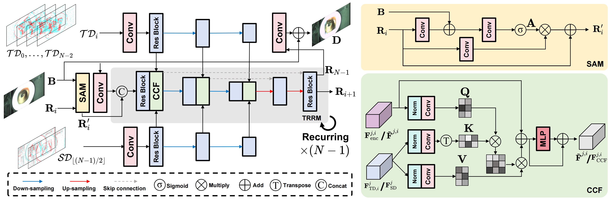

Project page template is borrowed from DreamFusion.
Motion blur arises when rapid scene changes occur during the exposure period, collapsing rich intra-exposure motion into a single RGB frame. Without explicit structural or temporal cues, RGB-only deblurring is highly ill-posed and often fails under extreme motion. Inspired by the human visual system, neuromorphic sensors introduce temporally dense information to alleviate this problem; however, event cameras still suffer from event rate saturation under rapid motion, while the event modality entangles edge features and motion cues, which limits their effectiveness. As a recent breakthrough, the complementary vision sensor (CVS) captures synchronized RGB frames together with high-frame-rate, multi-bit spatial difference ($\mathcal{SD}$, encoding structural edges) and temporal difference ($\mathcal{TD}$, encoding motion cues) data within a single RGB exposure, offering a promising solution for RGB deblurring under extreme dynamic scenes. To fully leverage these complementary modalities, we propose $\textbf{S}$patio-$\textbf{T}$emporal Difference $\textbf{G}$uided $\textbf{D}$eblur $\textbf{N}$et (STGDNet), which adopts a recurrent multi-branch architecture that iteratively encodes and fuses $\mathcal{SD}$ and $\mathcal{TD}$ sequences to restore structure and color details lost in blurry RGB inputs. Our method outperforms current RGB or event-based approaches in both synthetic CVS dataset and real-world evaluations. Moreover, STGDNet exhibits strong generalization capability across over 100 extreme real-world scenarios. Our code, dataset and pre-trained weights will be fully publicly available.

Drag the vertical slider to compare the blurred input with our deblurred result.
Given a single blurred frame as input, our method reconstructs a sequence of sharp frames within the exposure time, recovering the underlying motion and producing a clear motion video.
Project page template is borrowed from DreamFusion.